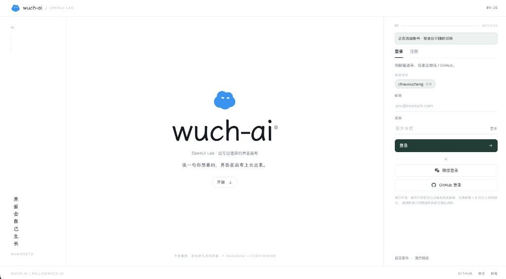
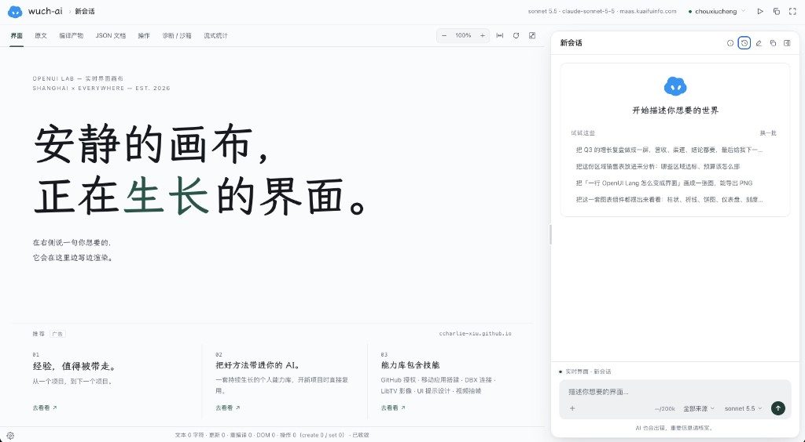
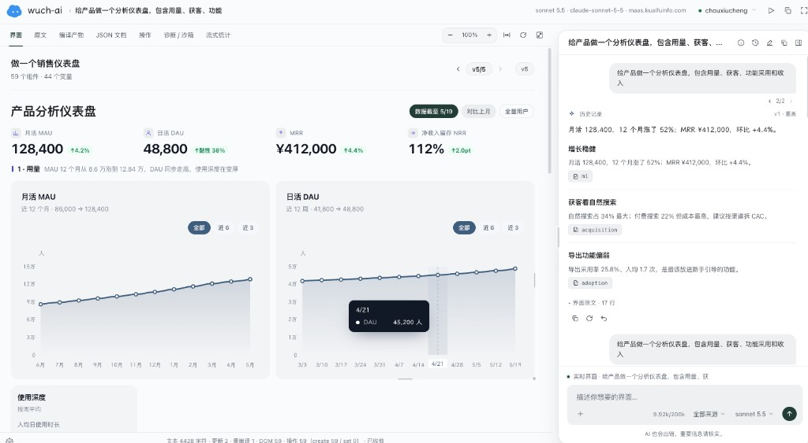
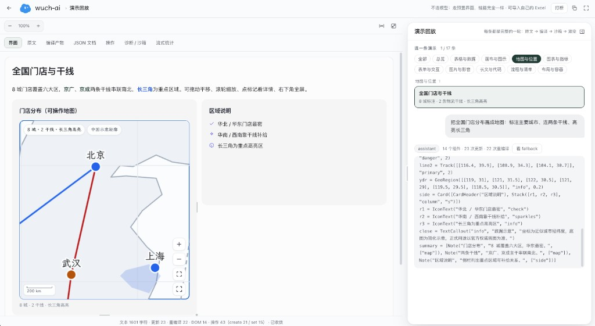
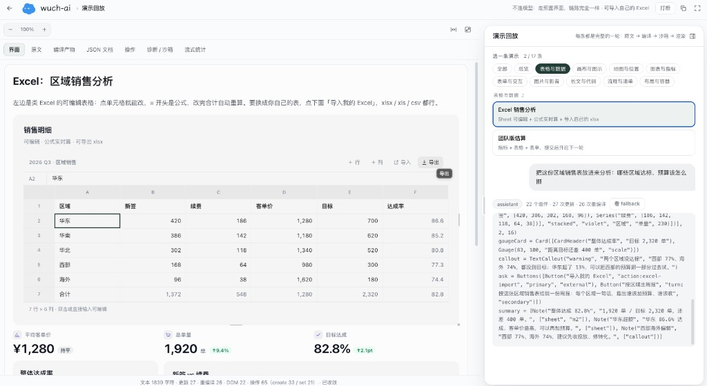

在线可用 · wuch-ai.net
不用拖控件、不用写前端。右侧说一句，左侧边写边渲染；滑块、勾选和选项就地改，不另调模型。会话、记忆和知识库留在你这边。
自然语言生成可交互界面 · 控件就地改、不另调模型 · 云端按账号隔离 · 也可本机自托管。
独立登录页，注册或登录后再进画布；可留多个账号随时切换。

左画布、右对话。右侧说一句，左侧边写边渲染；顶栏可看原文、编译产物、诊断。

一句「做产品分析仪表盘」就能长出指标、趋势图和结论卡，对话里继续改。

演示回放里不连模型也能看：门店标注、干线、区域高亮，链路与正式聊天相同。

可编辑的销售明细，支持导入自己的表格，再让对话做达标与预算分析。

bun install → bun run dev（详见仓库 README）